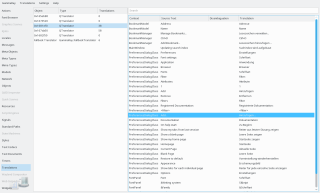

The translation inspector allows you to observe and override translation lookups on active QTranslator instances at runtime. This is useful for debugging translation issues as it also shows context and disambiguation information, as well as for verifying UI layouting as the length or format of translated strings change.

The translation inspector lists all active QTranslator instance on the left hand side. These are not necessarily all QTranslator instances that exist in the target application, but those registered with QCoreApplication::installTranslator, as only those are considered for translation lookup.
Selecting a translator on in the left view shows the corresponding translations that have been looked up and found in its catalog in the translations view on the right. This view contains the following information:
Translated messages can be edited in the translations view. To revert changes made there, use the "Reset Selected Translations" action found in the translations menu or the context menu on the translations view. For changes to take effect, it's often needed to notify the target application via a QEvent::LanguageChange event, this can be triggered via a corresponding action in the translations menu.